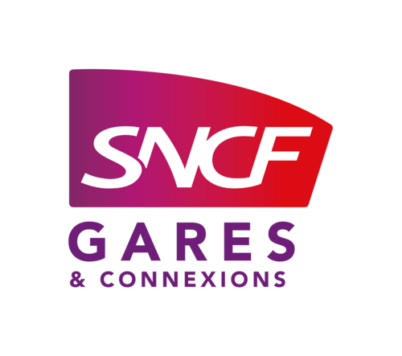
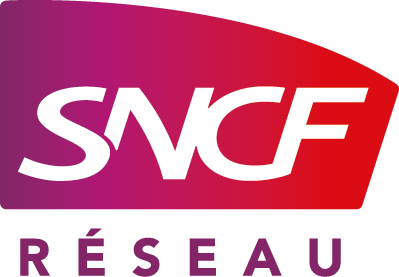

Quatre ans passés sur le rail, de la circulation à la sécurité en gare. À construire des outils, expérimenter et acquérir de nouvelles compétences à chaque étape.
Assistant Sécurité & Production
2025 – aujourd’hui

SNCF Gares & Connexions
Prévention et sécurité, coactivité, maintenance réglementaire et exploitation des données. Des outils construits pour retirer les tâches répétitives : suivi financier, rapports de vérification, plans de prévention, recherche du suivi d’un équipement ou d’un bâtiment.
Technicien supérieur de la circulation ferroviaire
2022 – 2025

SNCF Réseau
Technicien supérieur de la circulation ferroviaire. Formations ACDV et TTMV obtenues en 2022–2023.
Master 2 MQSE
2026 – 2027
Université Sorbonne Paris Nord
Maintenance, qualité, sécurité et environnement. Master classé n°1 national de la catégorie Qualité Sécurité Environnement au classement Eduniversal 2026, et n°1 des masters Qualité, hygiène, sécurité selon Thotis (via Mon Master).
Classe préparatoire économique et commerciale (voie économique) en 2016–2017, après le baccalauréat ES obtenu en 2016.
Compétences
En cours d’acquisition
Prévention & sécurité
Analyse de risquesCoactivitéPlans de préventionSuivi des écartsActions correctivesCertification NEBOSH
Maintenance & exploitation
Suivi réglementaireVigilance équipementsPilotage des échéancesFiabilisation des données
Data & automatisation
Power BIPower AutomateExcelHTML / JavaScriptExtraction PDFOCRJSON
IA appliquée
Agents LLMCompétences en MarkdownConnecteurs & MCPMémoire sous ObsidianModèles à score de confianceServeur interne & LLM open sourceOrchestration multi-modèles
Référentiels
ISO 9001ISO 45001ISO 14001ISO 22301ISO 27001 / 27002ISO 19443
Méthodes
Lean Six Sigma Yellow BeltGreen BeltDMAICSIPOCPDCAAudit terrainAnalyse des écartsAmélioration continue
Savoir-être
CuriositéRigueurAutonomieEsprit critiqueGoût du détailDéterminationApprendre en autonomieTransmission